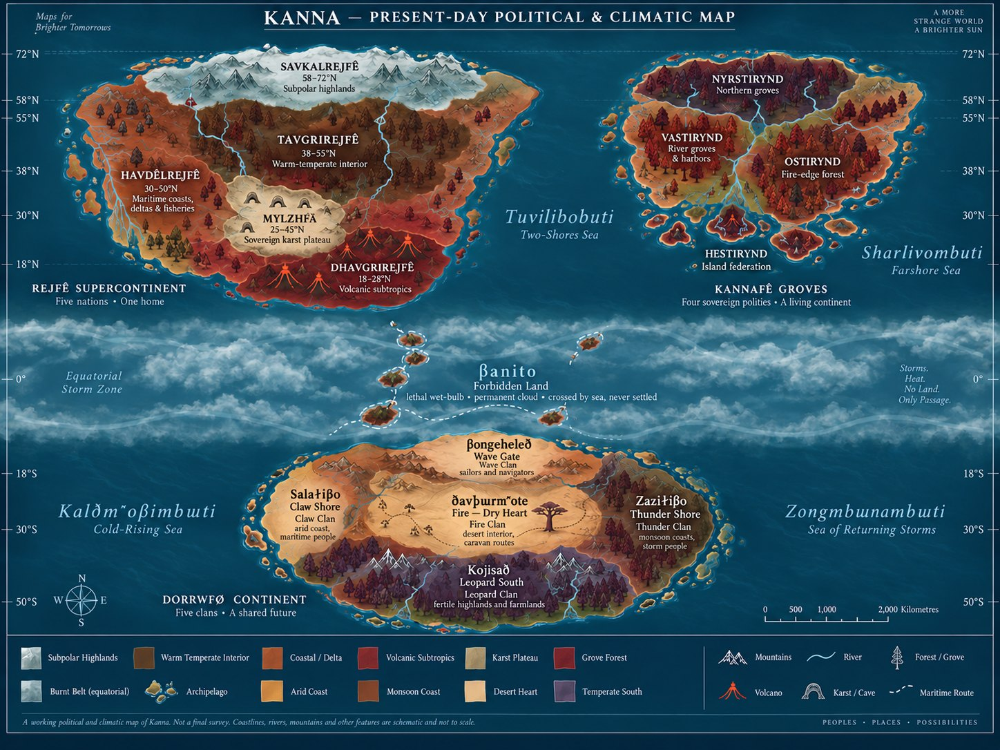

Home / Kanna
Kanna
A hot, dark-forested world circling an orange star. It is the home of the Vorfae and, after the Calamity, of four living peoples.
Lines without a tag are settled canon from the Kanna reference documents. Tags mark anything less settled.

At a glance
- Star
- Hvan, a K-type dwarf. Its light is orange, so the forests are dark red and bronze rather than green.
- Day and year
- A 26.43-hour day. A year of 211.45 Earth days, which is 192 local days.
- Air
- About 30% oxygen. Fire is a season, not a disaster.
- Moons
- Two before the Calamity, Kiruvyn and Kiravin. One after, Sidlosa.
- Land
- Three landmasses and fourteen sovereign territories.
- The barrier
- The Burnt Belt, a steaming equatorial band that is crossed by sea and never settled.
The three landmasses
| Landmass | People | Territories |
|---|---|---|
| Rejfê northern supercontinent | Rejfê, and the Mylzhfã beneath the karst | Savkalrejfê, Tavgrirejfê, Havdèlrejfê, Dhavgrirejfê, plus sovereign Mylzhfã (5) |
| Eastern grove continent | Kannafê | Nyrstirynd, Vastirynd, Ostirynd, Hestirynd (4) |
| Southern continent | Dorrwfø | Wave, Claw, Thunder, Fire, Leopard (5) |
Names on the map
Each major feature is named in the language of the culture most tied to it. The Burnt Belt is a barrier, not a fifteenth territory: it has a name but no government. Canon
| Feature | Language | Name | In English |
|---|---|---|---|
| Central sea, between the Rejfê and the Kannafê | Rejfên | Tuvilibobuti | Two-Shores Sea |
| Eastern sea, east of the Kannafê | Kannafên | Sharlivombuti | Farshore Sea |
| Southwest sea, Claw waters | Dorrwfø | Kaldhmhovhimbwti | Cold-Rising Sea |
| Southeast sea, Thunder waters | Dorrwfø | Zongmbwnambwti | Sea of Returning Storms |
| The Burnt Belt | Dorrwfø | Vhanito | Forbidden Land |